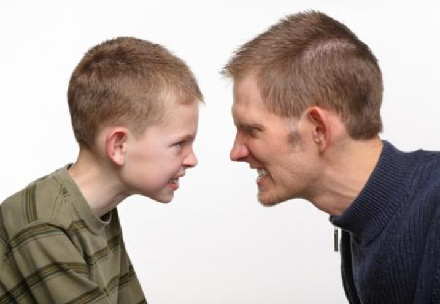

TEORÍAS PSICOLÓGICAS SOBRE EL ORIGEN DE LA ORIENTACIÓN SEXUAL HOMOSEXUAL
A) La orientación homosexual resultante de eventos traumáticos en el desarrollo sexual temprano. Cómo, por ejemplo, el abuso sexual infantil o el ser sujeto a desatención substancial
B) La presencia de una identificación muy intensa con el progenitor del mismo sexo. Por ejemplo, la identificación con la madre del pequeño varón, producto de la ausencia paterna.
C) La influencia de experiencias homosexuales que operaran como condicionadores positivos, por el placer que pudieran producir, determinando de esta manera la orientación futura, particularmente como consecuencia de experiencias sexuales tempranas en la adolescencia o preadolescencia.
¡Sin embargo, al estudiar miles de individuos hetero y homosexuales, se concluyó que ninguno de los tres planteamientos psicológicos mencionados se observaba con consistencia en las historias revisadas y analizadas con métodos estadísticos sofisticados!